Dans le monde d'Aeltheria, chaque être a sa place, qu'il soit issu de la surface ou des royaumes éthérés. Les Races Mortels peuplent les forêts, montagnes et villes de la surface, allant des espiègles Nymphes aux ingénieux Oniyx et aux puissants Elfes. Chaque race possède ses propres coutumes, talents et histoires, façonnant un monde riche en magie, en technologie et en aventures épiques. À l'opposé, les Races Éthérées viennent des cieux, des abysses, des royaumes divins ou de la magie elle même, incarnant des forces mystiques ou cataclysmiques qui influencent le destin de la surface. De majestueux Dragons aux énigmatiques Calamités, en passant par les Esprits et les Éternels, ces entités façonnent le monde en arrière-plan, parfois invisibles, mais toujours essentielles. Explorez Aeltheria, découvrez ses peuples, leurs alliances, rivalités et légendes, et laissez-vous emporter par un univers où magie, courage et curiosité s’entrelacent à chaque pas.
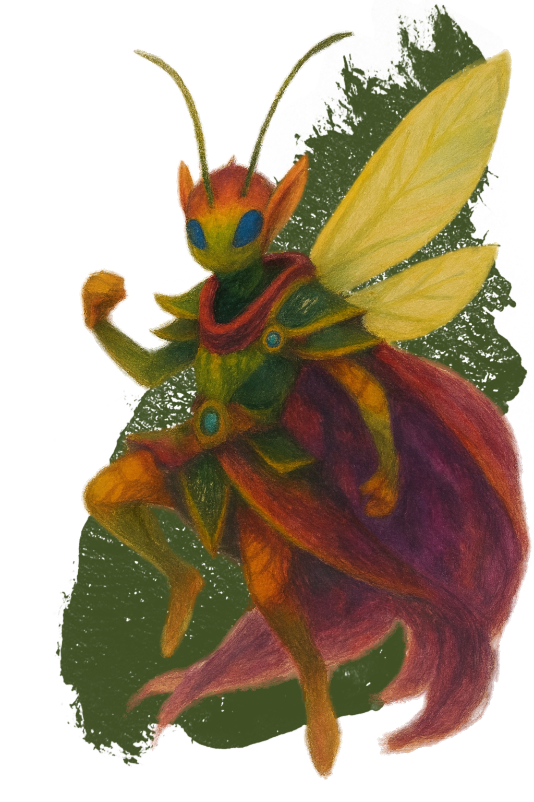
Premiers êtres vivants bénis par le bâton de Gabriel, joueurs et espiègles.
Les Nymphes sont de très petits êtres humanoïdes aux traits insectoïdes, à l’apparence et au comportement enfantins. Leur taille minuscule leur confère une grande agilité et discrétion. Joueurs et farceurs, ils s’amusent sans limites et aiment faire des blagues, tout en respectant profondément la Nature. Avec leurs petits pouvoirs magiques, ils ont recoloré la forêt de Vaeloria et ont donné vie et couleur aux papillons, suivant la volonté de Gabriel et Aurore. Ces enfants de Gabriel représentent une miniature des Elfes de l’Âge des divinités, honorant l’équilibre naturel et la beauté de leur environnement.
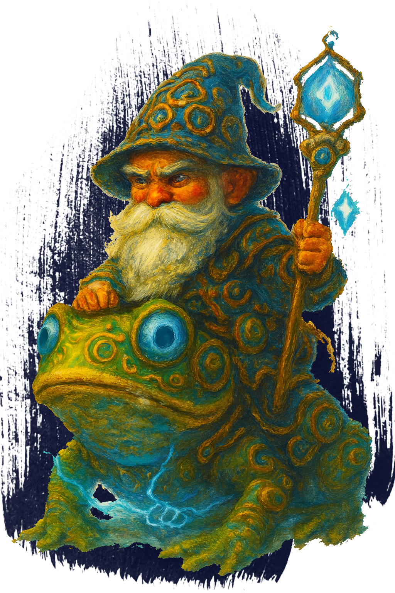
Petits mais intrépides, toujours à expérimenter et inventer.
Les gnomes, de très petite taille et dotés d’une pilosité faciale abondante, sont des êtres curieux et passionnés par la recherche et l’expérimentation. Durant l’Épopée Héroïque, ils se sont illustrés dans les montagnes et principalement à Lumethia, déployant leurs inventions et innovations. Alchimistes et explorateurs hors pair, ils utilisent souvent leurs propres créations comme montures pour se déplacer rapidement, compensant leur petite stature avec ingéniosité et créativité. Leur sens de la curiosité et de l’invention fait d’eux des alliés précieux et des personnages incontournables dans les aventures et découvertes du monde.
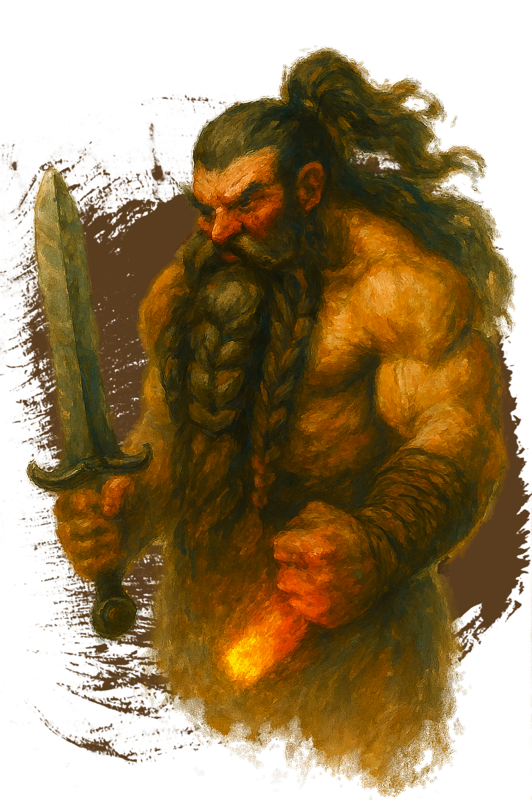
Robustes, artisans et combattants, toujours prêts à se surpasser.
Les nains, robustes et à la carrure imposante, sont un peu plus petits que les humains, mais bien plus larges d’épaules. Maîtres artisans, ils façonnent les matériaux avec un savoir-faire exceptionnel, héritage d’une ancienne civilisation disparue à l’origine de leur artisanat magique. Originaires de Hadeir et de Lumethia, ils sont débrouillards et passionnés, partageant un grand passé de camaraderie avec les Oniyx à l’âge des divinités. Toujours prêts à dépasser leurs limites physiques, ils préfèrent aller chercher leurs matières premières eux-mêmes plutôt que de laisser cette tâche à de simples marchands focalisés sur le profit.
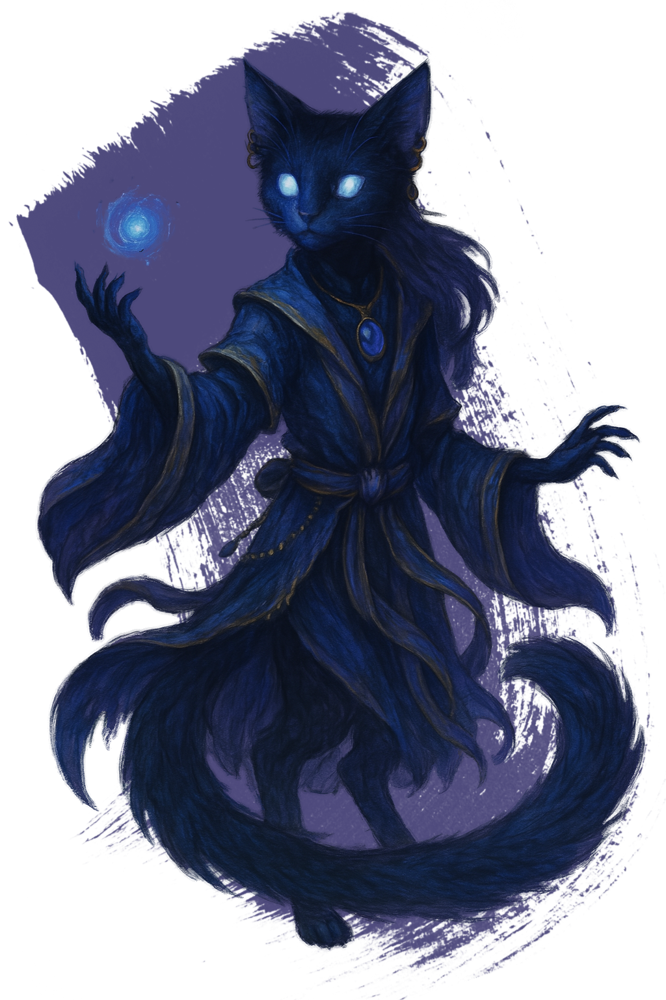
Une race magique et inventive, créatrice de la mystérieuse Technomagie.
Curieux, ingénieux et cultivés, les Oniyx possèdent une apparence féline avec oreilles, queue et pelage, et se tiennent sur deux jambes avec des mains préhensibles. Maîtres de la Technomagie, ils fusionnent science et magie pour créer artefacts et machines puissantes. Leurs yeux perçants reflètent un esprit vif et analytique, et leur manipulation de l’espace et des éléments dans des orbes élémentaires reste l’un des plus grands mystères du passé. Trop impliqués dans la technologie pour élever les mortels au rang des Éternels, ils ont été ciblés et doivent désormais se cacher ou se faire passer pour des Antropomorphes. Leur dernière création, le Paguroniyx, fut si puissante qu’elle fut scellée dans les Abysses, témoignant de leur génie et de leur puissance.
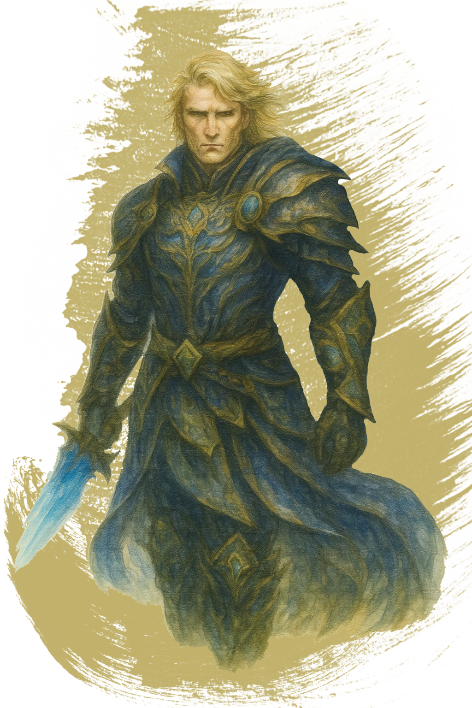
Polyvalents et débrouillards, ils prospèrent partout et bâtissent des civilisations.
Les humains, de taille moyenne, ont toujours été curieux et adaptables. Au fil des âges, ils ont exploré diverses cultures, allant des nordiques aux civilisations gréco-romaines steampunk, jusqu’aux duchés et royaumes orientaux, chacun maîtrisant des éléments et magies variés. Suite à la Malédiction des Rois, beaucoup se sont tournés vers la croyance d’Aeltheria et des pèlerinages spirituels. Leur courte espérance de vie les pousse à entreprendre de grandes actions pour laisser une trace dans le monde, et malgré leur collaboration fréquente avec d’autres races, ils demeurent souvent les leaders et bâtisseurs de civilisations complexes.
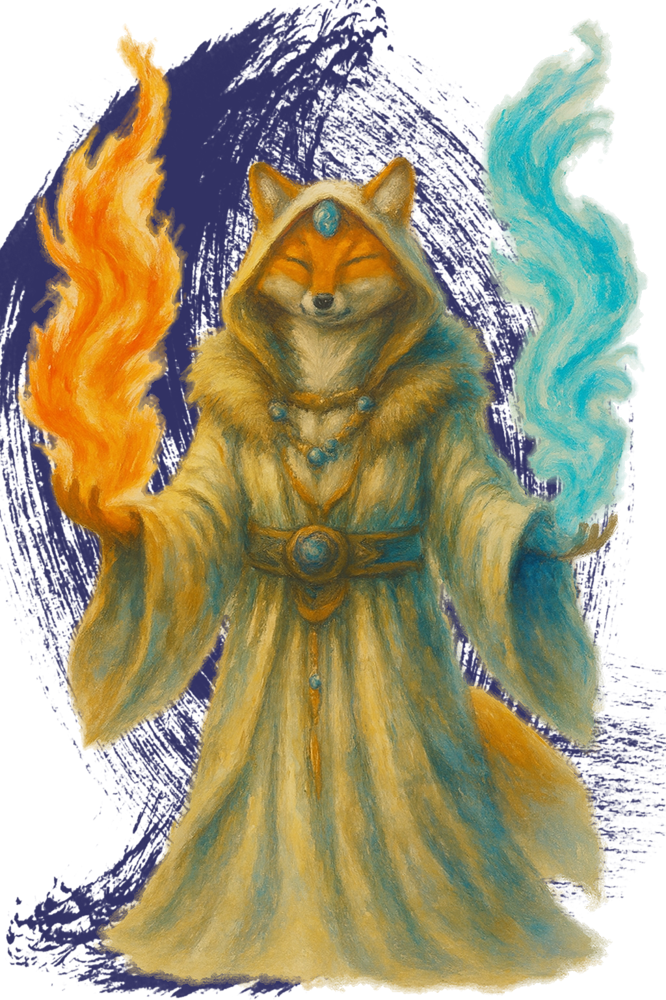
Animaux transformés en humanoïdes, liés à une tribu élémentaire.
Les Anthropomorphes sont des animaux ayant acquis une forme humanoïde, dont l’apparence varie selon l’espèce d’origine. Vivant en tribus chamaniques centrées autour d’un élément, chaque membre développe des affinités propres à son élément. Leur histoire commence avec le bâton de Gabriel, confié à la première tribu reptilienne par l’enchanteresse Sylvaine. De là sont nées des tribus dédiées à l’Eau en Eldarion, au Feu à Keria et d’autres éléments, chacune suivant un chemin spirituel unique. Ces créatures, guidées par les anciens et protégées par de puissants êtres, perpétuent un héritage magique et chamanique exceptionnel.
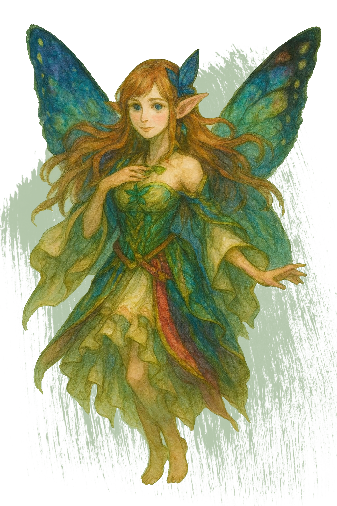
Puissante race féerique ayant fourni son énergie vitale pour aider leur reine.
Altruistes, empathiques et protecteurs, les Elfes possèdent une affinité naturelle avec le Feu, la Nature et la Lumière. Grâce à leurs majestueuses ailes de papillon, ils sont les seuls mortels capables de voler, et leur puissance magique élémentaire est redoutable. Aeltheria, guidée par les sacrifices d'Aurore et Gabriel, a façonné le monde sous l’Âge de la Malédiction des Rois, et les Elfes ont été en première ligne pour protéger les mortels lors des conflits divins. Élancés et gracieux, certains possèdent des mutations uniques, adoptant l’apparence d’autres insectes ailés, ce qui fait d’eux une race à la fois fascinante et redoutable.
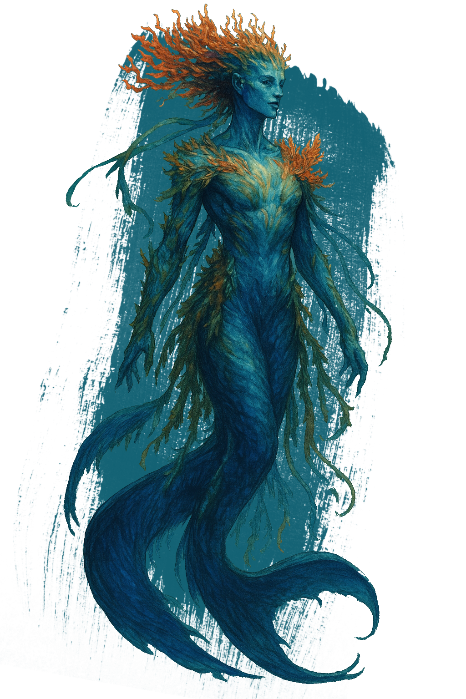
Peuple marin hybride, protecteur de leur environnement aquatique.
Les Alphilans sont un peuple marin au corps hybride : leur moitié supérieure est humaine, souvent ornée d’algues, d’écailles ou de coraux, tandis que leur moitié inférieure prend la forme d’une queue de dauphin ou de tentacules d’espèce aquatique. À la fin de l’âge des divinités, la Reine des Sirènes tomba amoureuse du Roi Eau en bord de plage. Il lui donna le pouvoir de respirer sous l’eau et ensemble ils bâtirent la nation de l’Eau, améliorant les relations avec la surface. Durant la guerre, leur sacrifice confirma les craintes liées à la présence d’étrangers. Leur enfant, le souverain des marées, combattra sans relâche jusqu’à rencontrer la Princesse Meridia, qui prendra soin de lui, permettant au peuple Alphilan de renouer avec la surface. Sociétés matriarcales et conservatrices, les Alphilans construisent leurs habitats en harmonie avec la faune et la flore aquatique, et sont extrêmement sensibles à la pollution de leurs eaux.
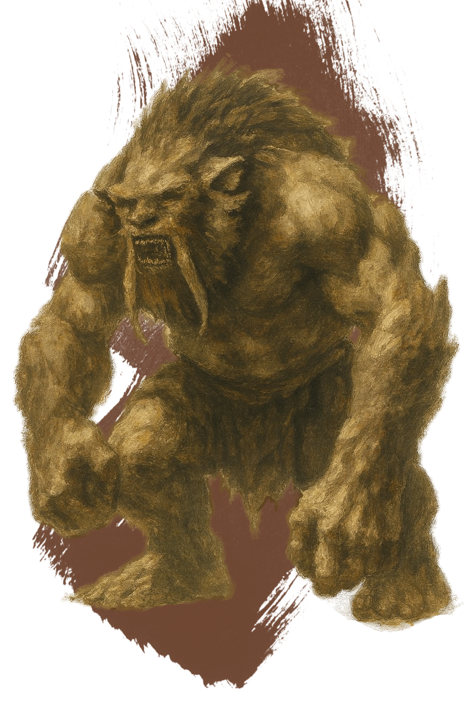
Peuple sauvage et primitif, fort et territorial.
Les Natus sont un peuple sauvage et primitif au physique très musclé, soutenu par leurs puissantes pattes avant, et recouverts d’un pelage dense adapté à leur environnement. Ils peuvent sembler intimidants, mais ils n’agissent rarement avec agressivité sans raison. Territoriaux et organisés en sociétés tribales, ils possèdent leur propre langue et coutumes, leur permettant de se distinguer comme une race unique. En respect mutuel avec les nomades de Nordvinter, les Hibernatus aident parfois les jeunes humains à traverser les Monts Nomades. Les Desernatus de Shal’Zaar, quant à eux, sont beaucoup plus hostiles et placent des totems pour protéger leurs territoires contre toute intrusion. Il existe donc plusieurs espèces de Natus, chacune avec ses propres habitudes et codes tribaux.
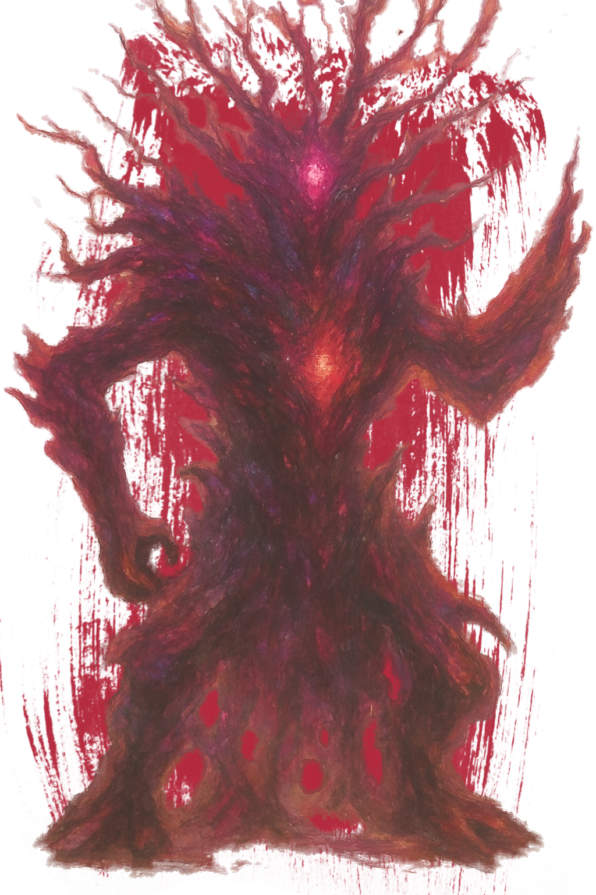
Arbres animés, sages et connectés à la vie.
Les Arshs sont des arbres animés, nés d’une graine de vie infusée par la magie du monde. Ils sont capables de communiquer avec d’autres créatures et possèdent une grande sagesse, accumulée au fil des siècles. Leur taille varie selon leur âge et leur espèce, certains atteignant des dimensions impressionnantes. Pacifiques et protecteurs, ils servent souvent de guides ou de refuges pour les voyageurs et autres races, veillant à l’équilibre de la nature qui les entoure.
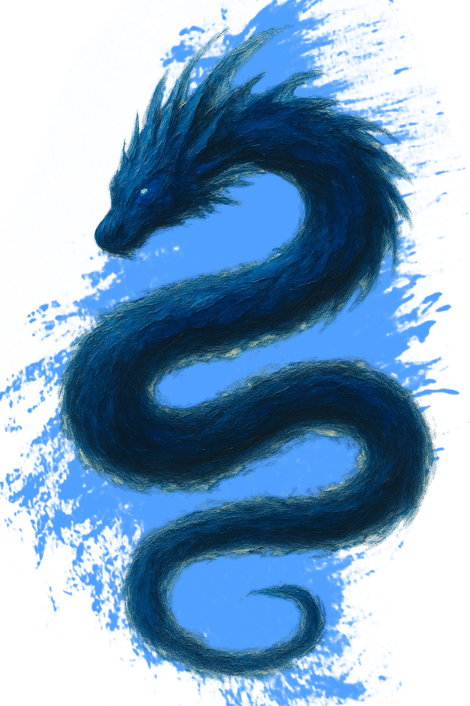
Grand fléau ou cataclysme, incarnation d’un dragon-serpent divin.
Nées de la volonté d’Aeltheria de reconstruire un monde plus équilibré, les Calamités ont pour mission de restructurer le continent afin de préserver l’équilibre élémentaire. Une fois leur tâche accomplie, elles sont rendues dormantes dans l’Abysse. Ces gigantesques dragons serpents sont des créations divines, tout comme les esprits. Outils titanesques de création et de destruction, elles façonnent l’environnement avant de sombrer dans un profond sommeil. Leur simple présence est une menace pour les habitants de la surface.
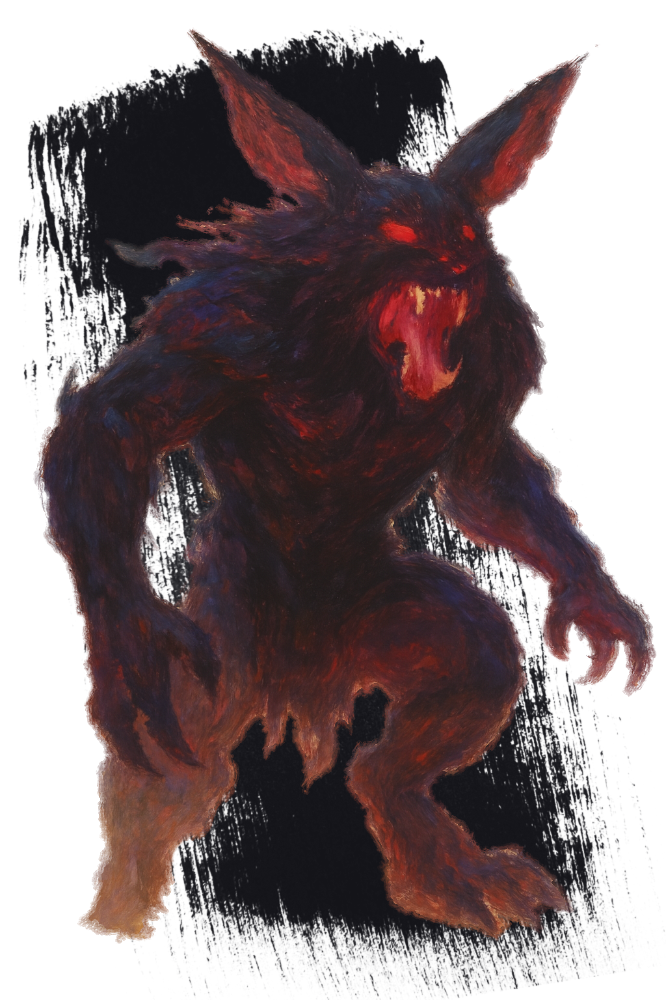
Créatures mystérieuses et terrifiantes des profondeurs.
Les Abyssals sont des monstres nés dans les profondeurs de l’Abysse, aux formes variées et souvent inquiétantes. Leur existence est alimentée par une puissante radiation magique qui émane des abysses. Ces créatures ont pour but de détruire, corrompre ou remplacer toute forme de vie à proximité, rendant leur présence redoutée par toutes les autres races. Peu d’êtres vivants osent s’aventurer dans leur domaine, car la survie est toujours incertaine face à leur puissance et leur ruse.
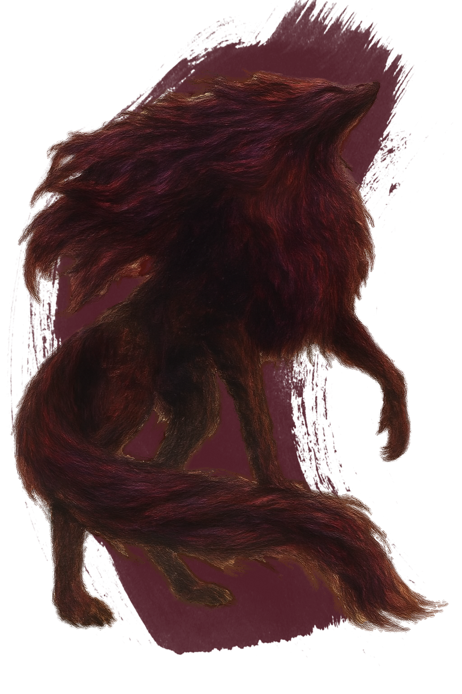
Puissances magiques incarnant des forces primordiales et des concepts fondamentaux.
Les Divinités sont des entités d’une envergure incommensurable, créatrices ou destructrices, influençant le monde et ses habitants. Guidant les mortels par leur volonté et leur pouvoir, elles demeurent toujours à l’extérieur du monde, conversant avec les Éternels des Royaumes Célestes, au risque de “casser leur jouet”. Chaque divinité possède sa propre culture qu’elle impose aux Éternels qui suivent sa doctrine. Elles sont nées de l’essence même de l’univers dans le chaos élémentaire.
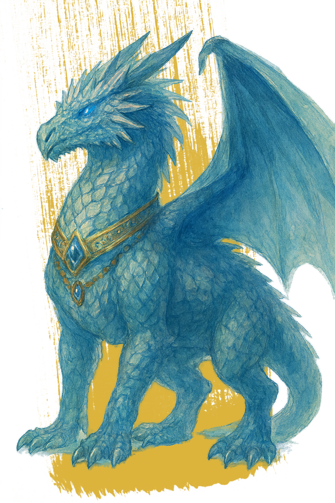
Immenses créatures quadrupèdes maîtrisant un élément et protégeant leur territoire.
Les dragons sont d’immenses créatures quadrupèdes, souvent dotées de vastes ailes pouvant doubler ou tripler leur envergure. Protecteurs de leur territoire, ils parlent une langue qui leur est propre et cohabitent parfois avec les humains. Au Nord sauf pour les dragons étoilés au Sud, ils comprennent la langue runique et aiment avoir leur propre territoire, aujourd'hui les Contrées de Cristal. Amoureux des trésors et des objets brillants, ils regroupent de nombreuses orbes de machines Pyrosolaine de l'ancien temps dans leurs nids. Leur puissance est équivalente à celle des éternels. Enfants de la mère des dragons, enfermée dans le plus haut Pic des Contrées de Cristal, ils s’attachent rarement aux autres créatures. Cependant, durant l'Epopée Héroïque, ils accepteront les humains comme partenaires afin de libérer leur mère, combattant à leurs côtés pour libérer le roi de Feu de sa malédiction.
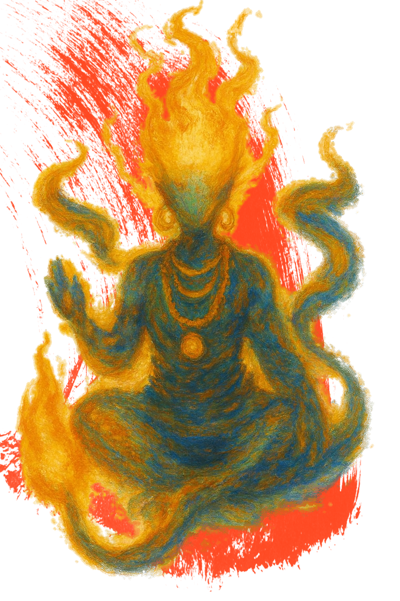
Êtres polymorphes et immortels, messagers de la volonté divine.
Les éternels sont des êtres polymorphes et immortels, dépourvus d’enveloppe charnelle descriptive. Ils apparaissent aux autres créatures de la manière qu'ils souhaitent. Créés par les divinités, leur rôle est de transmettre la volonté divine. Ils disposent d’un libre arbitre sauf lorsqu’ils incarnent l’Avatar d’une divinité. Selon la divinité qu’ils suivaient, ils sont capables de voler pour rejoindre les Royaumes Célestes s'ils n'ont pas été enfermés dans l'Abysse. Ces êtres ont profondément influencé le devenir du monde : certains furent emprisonnés dans les Abysses, tandis que d’autres, en accord avec Aeltheria, aidèrent les esprits à maintenir l’équilibre du monde de la surface. Une fois leur tâche accomplie, ils retournèrent dans les Royaumes Célestes au-dessus des nuages.
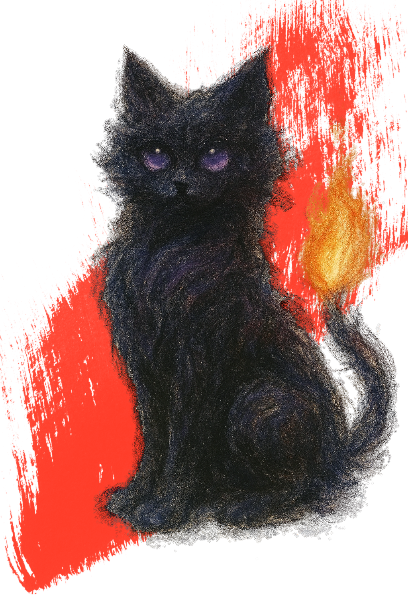
Entités créées pour accomplir un but précis et préserver l'équilibre.
Animés par la volonté d'Aeltheria, les esprits se retrouvent dormant une fois leur tâche terminée. Si cette volonté n'est plus respectée, ils se réveillent et se chargent de préserver l'équilibre élémentaire demandé par leur existence. Leur comportement rappelle celui de machines, en raison de leur extrême loyauté envers leur mère. Souvent dotés d’une apparence animale destinée à tromper les vivants, ils naissent d’une essence mystique guidée par une volonté divine. Leur apparition signale une grave perturbation élémentaire, qu’ils sont chargés de réguler à petite échelle pour rétablir l’équilibre magique.